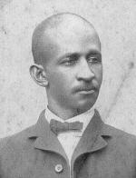

|

|

|
|
|
Born free in New Orleans, Caesar Carpetier Antoine was the son of a member of Louisiana's Corps
d'Afrique who fought with Andrew Jackson during the War of 1812. His mother was
a West Indian-born midwife who had purchased her freedom. Educated in New
Orleans's private schools for free black children, Antoine worked as a barber
before the Civil War. During the war he was a captain in Company I, 7th
Louisiana Infantry, a unit he raised himself. A member of the January 1865
Louisiana black convention that demanded the right to vote, Antoine was an
associate editor of the New Orleans Black Republican, a short-lived
newspaper claiming to give voice to the interests of black Louisianians as
opposed to the free Negroes represented by the New Orleans Tribune.
Antoine moved to Shreveport later in 1865, where he entered the grocery
business. According to the 1870 census, he owned $2,000 worth of real estate and
no personal property. A close ally of P. B. S. Pinchback, Antoine was, with
Pinchback, a proprietor of the New Orleans Louisianian, and co-owner of a
cotton factorage and brokerage business. The two were said to be worth some
$60,000 to $75,000 in the early 1870s. He also owned expensive race horses and
acquired a small plantation.
After representing Caddo Parish in the constitutional convention of 1868,
Antoine was elected to the state Senate, serving 1868-72. In 1872, he was
elected lieutenant governor, an office he held to 1876. He briefly served as
acting governor. In 1873, Antoine supported the Louisiana Unification movement.
He was appointed to the Caddo Parish school board in 1875. Antoine graduated
from Straight University Law School during the 1870s.
Defeated for reelection as lieutenant governor in 1876, Antoine fell on
difficult times. In 1878, his wife begged President Hayes for some position for
her husband, as they had "not a nickel in the house." In 1880, he became
president of the Cosmopolitan Insurance Association but enjoyed only limited
success. Ten years later, Antoine was vice president of the New Orleans Citizens
Committee, which protested segregation in Louisiana and enlisted Homer Plessy to
file a court challenge that resulted in the Supreme Court case of Plessy v.
Ferguson. During the 1890s, he filed for an invalid pension from the federal
government, claiming to have contracted pleurisy in the army. He remained active
in Republican affairs, attending the national convention of 1896 and serving on
the party's state central committee. He died in Shreveport, Louisiana in 1921.
Source: Eric Foner, Freedom's Lawmakers: A Directory of Black
Officeholders during Reconstruction (New York: Oxford University Press,
1993), 8-9.
|